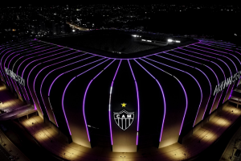

Camarotes: 112 (capacidade de 20 torcedores sentados cada)
Lounges: 2 (Sul e Norte), com capacidade para 1 900 torcedores
Bares: 40
Banheiros: mais de 50, com quase 850 vasos sanitários, 800 mictórios e 650 pias; mais de 70 banheiros exclusivos para deficientes
Estacionamento: aproximadamente 2 500 vagas cobertas
Distância da arquibancada para o campo: 8,5m e 10,5m (dependendo do setor)
Capacidade máxima em um show realizado na arena: 65 mil a 70 mil pessoas 
Arena MRV, dia da mulher.